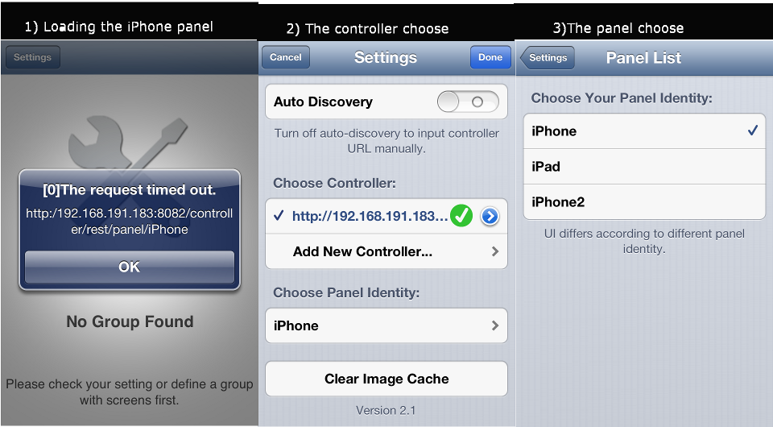

Hi everybody and Happy new Year 
I need your help and any suggestion.
I installed the controller, java jdk1.8.0. and eibnetmux on a Rasperry PI,all works well without problems.
1)When i try to load my "iPhone" panel, controller after about 1 minute, and give me the TIME REQUESTED error (see 1 in the picture)
2)The choose controller is fast, about 1 second with jdk1.8.0, much faster than previous jdk icedtea-6-jre-cacao.
3)The choose panel indentity is fast, about 1 second with jdk1.8.0, much faster than previous jdk icedtea-6-jre-cacao.

I can't undestrand why is so slow to load the panel; the same problem it was also in a NAS QNAP or in a LINUX VMWARE,
but now I decide to install the controller on the Raspberry PI.
The pictures of my panels are 39 of 53 files in the controller directory, the total size image is 1071(kb) of 1533; the panel.xml size is 139 (kb).
What is the problem ?
- too many pictures ?
- too big the pictures? the big one is 100k.
- too many devices ? the 4 pictures up,down,start,stop for our 10 blinds are loaded 10 times,
some ON OFF pictures are loaded more times, one time for every item like a lamp...
The panel "iPhone2" is a simple TEST panel without pictures, it is loaded without problems and it works.
The "iPad" panel on an "iPad mini" have the same problems of the "iPhone" one, the loading is much faster in the "mini" than in the "iPhone"
What do You think ?
How could I do or test ?
Thanks for any suggestions.
{kind=link}
{kind=link}
{kind=link}
{kind=link}